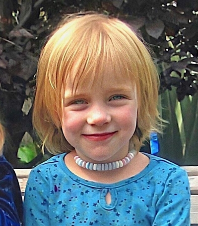
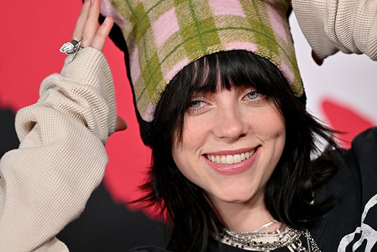
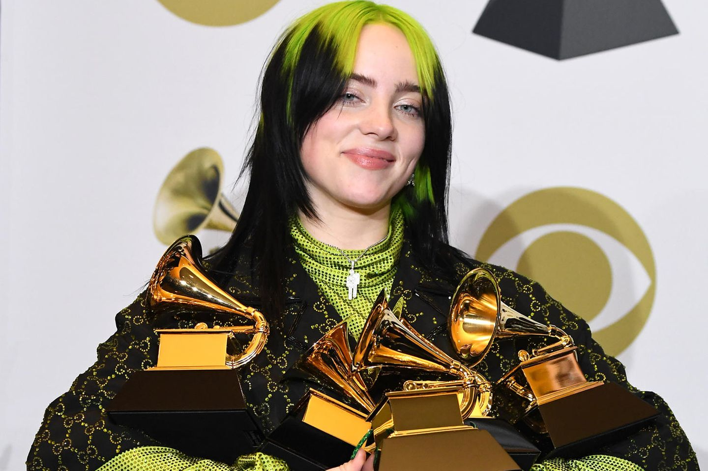
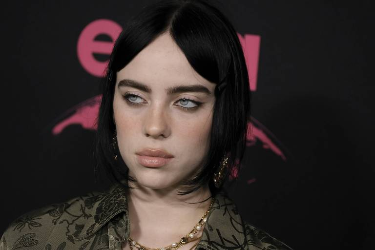
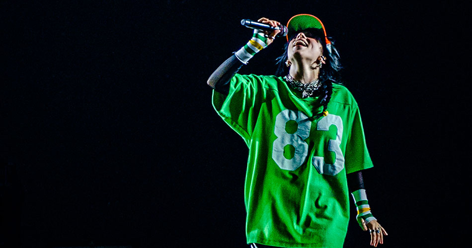
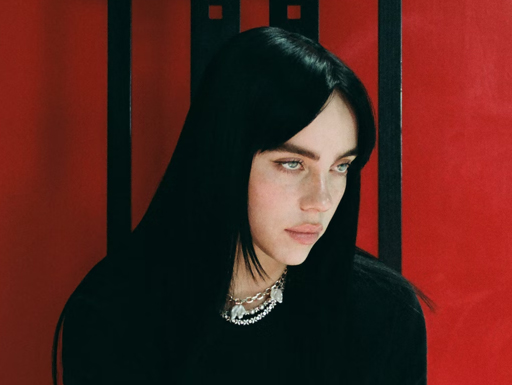

Billie Eilish 18 de dezembro Pirate Baird O'Connell nasceu em Los Angeles, Califórnia, em de 2001, filha de Maggie Baird e Patrick O'Connell, ambos conhecidos na indústria do entretenimento. Ela é descendente de irlandeses e escoceses e foi criada no Highland Park de Los Angeles. Eilish foi educada em casa e ingressou no Coro Infantil de Los Angeles aos oito anos. Ela começou a cantar em tenra idade e começou a escrever músicas aos 11 anos, ao lado de seu irmão mais velho, Finneas O'Connell, que já estava escrevendo, tocando e produzindo suas próprias canções com sua banda.
Billie Eilish Pirate Baird O'Connell (Los Angeles, 18 de dezembro de 2001), mais conhecida como Billie Eilish, é uma cantora e compositora estadunidense. Ganhou popularidade em 2016, quando lançou o single de estreia "Ocean Eyes" no SoundCloud, posteriormente lançado pelas gravadoras Darkroom e Interscope Records. A canção foi escrita e produzida por seu irmão Finneas O'Connell, com quem ela colabora em músicas e shows ao vivo. Eilish é mais conhecida por seu single "Bad Guy", de 2019, que atingiu o topo da Billboard Hot 100. Ela foi indicada para seis Grammy Awards, incluindo Gravação do Ano, Álbum do Ano, Canção do Ano e Melhor Revelação. Ela é a artista mais jovem a ter sido indicada nas principais categorias do Grammy Awards
Seu primeiro extended play, Don't Smile at Me (2017), alcançou o top 10 nos Estados Unidos, Reino Unido, Canadá e Austrália. Eilish colaborou com o cantor estadunidense Khalid para o single "Lovely", lançado em abril de 2018 e adicionado à trilha sonora da segunda temporada de 13 Reasons Why.[3] Seu álbum de estreia, When We All Fall Asleep, Where Do We Go? (2019), estreou no topo da Billboard 200 e alcançou o número um no Reino Unido, Canadá e Austrália. O álbum obteve quatro singles no top 40 da Billboard Hot 100: "When the Party's Over", "Bury a Friend", "Wish You Were Gay" e "Bad Guy", o último dos quais se tornou seu primeiro single número um nos Estados Unidos. Eilish tem oito singles de ouro e quatro de platina em solo estadunidense.
Seus prêmios incluem sete Grammy Awards, dois American Music Awards, dezesseis Guinness World Records, três MTV Video Music Awards e um Oscar. Ela é a pessoa mais jovem e a primeira mulher a vencer as quatro principais categorias do Grammy (Álbum do Ano, Gravação do Ano, Canção do Ano e Melhor Artista Revelação) no mesmo ano. Foi eleita uma das "100 mulheres mais inspiradoras e influentes do mundo em 2022" pela BBC.
Eilish cresceu ouvindo The Beatles, Green Day, Justin Bieber, Arctic Monkeys, Linkin Park e Lana Del Rey. Ela disse que o vídeo da canção "Runaway" da cantora norueguesa Aurora no YouTube a inspirou a seguir uma carreira musical. O hip hop é o gênero favorito de Eilish e a sua maior inspiração. Ela citou Tyler, the Creator, Childish Gambino e Avril Lavigne como principais influências musicais e de estilo para ela, e outras influências incluem Earl Sweatshirt, Amy Winehouse, Spice Girls, Lorde, Marina and the Diamonds, Britney Spears, Taylor Swift, Nicki Minaj e Lana Del Rey. Ela foi comparada na mídia a Lavigne, Lorde e Del Rey, a última da qual ela diz que não quer ser comparada, dizendo em uma entrevista ao Los Angeles Times: "Essa mulher [Del Rey] tornou sua marca tão perfeita para toda a sua carreira e ela não deveria ter que ouvir isso." Ela nomeou Rihanna como uma inspiração para suas escolhas de estilo, depois de chamar de moda seu "mecanismo de defesa" durante um discurso de aceitação.
Eilish afirmou que ela tem síndrome de Tourette e sinestesia, e já teve uma experiência de depressão. Ela foi criada como vegetariana, mas decidiu ser vegana em 2014, além defender regularmente o estilo de vida nas redes sociais. A cantora também apoia o aborto e doou parte da arrecadação de sua apresentação no Music Midtown Festival para o Planned Parenthood
